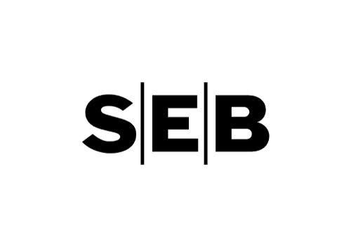
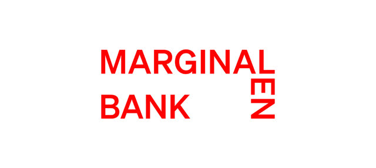
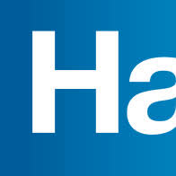

| Źródło / agent | Status | Szczeble | Uwagi |
|---|---|---|---|
| scrape-lunar (lunar.app, help center, Trustpilot SE/DK, FI-register, Shopify Community) | ✅ COVERED | web_fetch + r.jina.ai | 15 źródeł; Reddit z Pi = 429 → fora SE alternatywne |
| scrape-marginalen-alisa (marginalen.se FAQ + cennik, alisabank.fi, news) | ✅ COVERED | web_fetch + r.jina.ai | Marginalen SEPA FAQ 2026-11-05 — twarde NO |
| scrape-nordea-seb (nordea.se, seb.se, cenniki PDF) | ✅ COVERED | web_fetch + r.jina.ai + PDF | Oficjalne prislisty 2026 |
| scrape-swedbank-handels (swedbank.se, handelsbanken.se, Prislista PDF 10/2026) | ✅ COVERED | web_fetch + curl+pdftotext | HB pełny cennik PDF 9 s. |
| scrape-misc-banks (danske, lansforsakringar, alandsbanken + 8 quick-check) | ✅ COVERED | web_fetch + r.jina.ai | LF z oficjalnej prislisty PDF (utg 43) |
| cross-sepa-stripe (EPC SCT register CSV 2026-10-09 + docs.stripe.com) | ✅ COVERED | curl (CSV z DB EPC!) | Twardy rejestr EPC 3501 uczestników |
| reviews-kyc (Trustpilot ×10, Reddit ~12 wątków, Flashback ×4, ~20 news) | ✅ COVERED | r.jina.ai + reddit.sh RSS | reco.se bez kategorii bankowej — pominięty świadomie |
| onboarding-dormant (11 banków, 21 źródeł, RikaTillsammans + Flashback + Lawline/FI) | ✅ COVERED | web_fetch + fora | Kluczowe evidence odmów dormant AB |
| R2: lunar-stripe-verify (31 źródeł — Stripe community, Shopify, Lunar help ×3) | ✅ COVERED | web_fetch + r.jina.ai | Zero realnych potwierdzeń Stripe→Lunar (ani sukces, ani fail) |
| R2: big-banks-verify (Nordea/SEB/HB/Svea cenniki + promocje) | ✅ COVERED | web_fetch + PDF | Startavgifty zweryfikowane, brak waivers |
Kontekst bazowy: research Wise↔Svea z tego samego dnia (26 plików destylatów, memory/research/wise-vs-svea-2026-11-10/) — Svea i Wise/Revolut nie były ponownie scrapowane w pełnym zakresie.
🥇 Najtańszy spełniający wymagania: Lunar Essential — 99 kr/mies (rozliczane rocznie) + bankgiro 39 kr/mies.
TCO rok 1: ~2 153 kr (z jednorazowym bankintyg 495 kr), od roku 2: ~1 658 kr/rok — ~2× taniej niż jakikolwiek tradycyjny bank. Spełnia: SEPA SCT (rejestr EPC) ✅, bankgiro w apce ✅, insättningsgaranti DK (100k EUR, dyrektywa EU) ✅, 100% online onboarding przyjazny dormant AB ✅.
⚠️ JEDEN warunek: Stripe payouts SEK na Lunar = zero potwierdzeń w terenie (ani sukcesu, ani porażki; na papierze zgodne — Stripe wymaga TYLKO IBAN SE, Lunar ma SE-IBAN + clearing 9710-9719). Test: dodaj IBAN w Stripe i zrób minipayout 20 SEK w 1. tygodniu.
🥈 Pewniak (jeśli test padnie / nie chcesz ryzyka): SEB Företagspaket 130 kr/mies — rok 1 z promocją (pół roku gratis) 3 280 kr, potem 1 560 kr/rok. Jedyne big-4 z w pełni cyfrowym onboardingiem + #2 stabilności KYC.
🥉 Opcja najszybsza: Svea Bas 149 kr/mies — onboarding ~30 min, Stripe potwierdzony twoją 3-letnią praktyką 2023-26. ALE: to bank który zamknął ci konto za dormant; reaktywacja niemożliwa (mail 22.06.2026: "går det inte att återöppna"), tylko nowa aplikacja. Utrzymuj minimalną aktywność.
rozliczane rocznie 1 190 kr; alternatywnie 119 kr/mies
SEPA ✅ EPCStripe ⚠️ testbankgiro ✅garanti ✅ DKonline ✅dormant 🟢🚩 Blokady AML realne (głównie outgoing/karty/private, nie incoming SEPA business); zero potwierdzonych payoutów Stripe→Lunar — stąd test.
startavgift 0 kr
SEPA ✅ EPCStripe ✅ praktykabankgiro ✅ incl.garanti ✅ 1,15 mlnonline ✅dormant 🟡🚩 Zamknęli ci konto po dormant (VI 2026); reaktywacja niemożliwa — tylko nowa aplikacja. Trustpilot 3,4/5. Wybierz świadomie: najszybszy start, ale ryzyko powtórki przy zerowej aktywności.
svea.com företagskonto · prislista 2026-09-16 PDF

pół roku gratis (promo, värde 780 kr)
SEPA ✅ EPCStripe ✅bankgiro ✅ 250 st gratisgaranti ✅online ✅ 100% cyfrowydormant 🟡🚩 Jawna klauzula "możemy odmówić bez uzasadnienia"; Trustpilot 1,3/5 (głównie retail); UC-check przy onboarding.
seb.se · "Aktuella priser för företag"
1 300 kr/rok rozliczane rocznie + start 2 500 kr
SEPA ✅ EPCStripe ✅bankgiro ✅ 0 krgaranti ✅online ⚠️ +telefondormant 🟡🚩 Trustpilot 1,6/5; udokumentowane przypadki cofnięcia zgód i zamknięć "bez wyjaśnienia" — opcja zapasowa wg rankingów stabilności.
nordea.se · Prislista företag 2026 PDF
| Bank | Cena | Powód odrzucenia |
|---|---|---|
 Marginalen | 99 kr/mies | Nie ma SEPA — nadal, w 2026! FAQ (publ. 05.11.2026): "Nej, Marginalen Bank är inte ansluten till SEPA". Dokładnie ten sam powód twojej ucieczki z 2023. Dodatkowo: zamraża konta, Trustpilot 1,7/5. źródło |
 Handelsbanken | 160 kr/mies + 2 500 | Onboarding wymaga wizyty w oddziale (nie online) + często statusu "helkund" prywatnego; najdroższy rok 1 (4 420 kr); stabilność #1 ale cena/onboarding kill. źródło |
| Swedbank | — | Najagresywniejsze KYC w SE (Trustpilot 1,2/5, sądowe przywracanie konta, odmowy na Flashback); wymaga bycia "helkund" prywatnym. Ryzyko nieakceptowalne po Svei. |
| Danske Bank | 165 kr/mies + 2 500 | Technicznie OK (online onboarding), ale Trustpilot 1,2/5 + migracja na District + droższy od SEB przy identycznym starcie. Brak przewagi. |
| Länsförsäkringar | 1 400 kr/rok + 2 500 | SEPA NIE w rejestrze EPC (tylko przez partnera — ryzyko); onboarding NIE online (lokalny länsbolag, 23 regiony, różne ceny); preferują klientów ubezpieczeniowych. |
| Ålandsbanken | — | Brak klasycznego företagskonto transakcyjnego dla AB w SE (tylko Premium 1 mkr+ / finansiering). |
| Alisa Bank | — | Bank wyłącznie fiński (alisa.se = zaparkowana domena; alisabank.fi = FI-IBAN tylko). Brak doniesień o ekspansji SE. |
| Skandia, Tobank, P.F.C., Nordnet, Avanza, Sparbanken Skåne, Ekobanken/JAK | — | Brak företagskonto transakcyjnego dla AB (Skandia: tylko pension/försäkring; Nordnet/Avanza: tylko depå/ISK/KF). |
| Qonto, Moss, Pleo, Holvi | — | Nie obsługują szwedzkich AB jako głównego konta transakcyjnego. |
| Revolut Business | — | Litewski IBAN, brak SE-IBAN/bankgiro/autogiro — nie pełni funkcji företagskonto. |
| Wise Business | 0 kr/mies | Benchmark z researchu rano: SEPA ✅, ALE Stripe payouts SEK ❌ (wymaga szwedzkiego konta), brak bankgiro, brak szwedzkiej insättningsgaranti, r/wisebank: masowe zamykania business. Rolę kanału EUR/GBP już pełni — zostaje jako uzupełnienie. |
| Bank / pakiet | Miesięcznie | Start | TCO rok 1 | TCO rok 2+ | Uwagi |
|---|---|---|---|---|---|
| Lunar Essential | 99 kr (rocznie) + bankgiro 39 | 495 (bankintyg) | ~2 153 kr | ~1 658 kr | najtańszy; + 1,49 kr/txn po limitach |
| Svea Bas | 149 kr | 0 | 1 788 kr | 1 788 kr | bankgiro w cenie; kart +50/mies opcja |
| SEB Företagspaket | 130 kr | 2 500 | ~3 280 kr (promo) | ~1 560 kr | pół roku gratis; 250 inbetalningar bankgiro gratis |
| Nordea Företagspaket | ~109 kr (1 300/rok) | 2 500 | ~3 800 kr | ~1 300 kr | najtańszy recurring tradycyjnych; bankgiro 0 kr |
| Handelsbanken Företagspaketet | 160 kr | ~0 (nie podano) | ~4 420 kr | ~1 920 kr | + wizyta w oddziale; bankgiro 1 incl., kolejne 250/st |
| Danske Business Plus | 165 kr | 2 500 | ~4 480 kr | ~1 980 kr | Business One 99 kr = tylko enskild firma, NIE AB |
| Länsförsäkringar Baspaket | ~117 kr (1 400/rok) | 2 500 | ~3 900 kr | ~1 400 kr | bankgiro 500 kr/rok; onboarding offline |
| Marginalen | 99 kr | ? | 1 188 kr | 1 188 kr | ODPADA — brak SEPA |
Wszystkie ceny z oficjalnych cenników 2026 (URL-e w destylatach memory/research/banki-firmowe-2026-11-10/raw/). Przy pojedynczej fakturze miesięcznie i kilku przelewach różnice transakcyjne są groszowe — decyduje abonament + start.
| Bank | BIC (reference) | SEPA SCT incoming (EPC) | Stripe payouts SEK |
|---|---|---|---|
| Lunar Bank A/S | LUNADK2B (DK) | ✅ w rejestrze | ⚠️ na papierze OK (SE IBAN + clearing 9710-9719; Stripe SE wymaga tylko IBAN) — test minipayout wymagany, zero potwierdzeń w terenie |
| Svea Bank | SVEASESS (SE) | ✅ w rejestrze | ✅ potwierdzone praktyką (twoje konto 2023-26) |
| SEB | ESSESESS (SE) | ✅ w rejestrze | ✅ standard |
| Nordea Bank Abp | NDEAFIHH (FI) / oddział SE | ✅ w rejestrze | ✅ standard |
| Handelsbanken | HANDSESS (SE) | ✅ w rejestrze | ✅ standard |
| Swedbank | SWEDSESS (SE) | ✅ w rejestrze | ✅ standard |
| Danske Bank | DABADKKK (DK) | ✅ w rejestrze | ✅ standard |
| Länsförsäkringar Bank | ELLFSESS (SE) | ⚠️ deklaruje SEPA, NIE ma w EPC (przez partnera) | niezweryfikowane |
| Marginalen Bank | MARGSESS (SE) | ⛔ NIE ("inte ansluten till SEPA", FAQ 05.11.2026) | ⛔ poważne ryzyko (SWIFT przez Nordea DK) |
Źródło: EPC Registers of Participants (SCT CSV 2026-10-09, 3 501 uczestników) + docs.stripe.com/payouts ("SEK bank accounts must be based in Sweden"; dla SE wpisujesz IBAN 24-zn). Pułapka metodologiczna: EPC grupuje po kraju osoby prawnej — Lunar (DK), Nordea (FI), Danske (DK) są w rejestrze przez macierzyste BIC.
| # | Bank | Proces | Ryzyko odmowy |
|---|---|---|---|
| 1 | Lunar | 100% w apce, ~6 dni, zero spotkań, bez wymogu affärsplan | 🟢 LOW |
| 2 | Marginalen | w pełni digitalna ansökan (BankID firmatecknare) | 🟢 LOW-MED (ale SEPA ⛔) |
| 3 | Svea | najszybszy (~30 min BankID) | 🟡 MED (zamknęli ci konto; ALE: nowa aplikacja = nowa ocena) |
| 4 | Danske | online Startpaket | 🟡 MED |
| 5 | SEB | helt digitalt, ~2 tyg., UC-check | 🟡 MED |
| — | Nordea | online + obowiązkowy telefon doradcy | 🟡 MED |
| — | Swedbank / Handelsbanken | chcą "helkund" prywatnego / wizytę | 🔴 HIGH (przy dormant) |
Stabilność długoterminowa (reviews-kyc, ~30 źródeł): 1. Handelsbanken (konserwatywny, relacyjny), 2. SEB, 3. Nordea (z zastrzeżeniami). Najgorsze dla low-activity: Svea (zamyka dormant — twoje case) i Marginalen (freezy). "Banker stänger konton i rekordfart" = zjawisko branżowe (FI prowadzi dochodzenie, r/sweden II 2026, 171↑).
Powered by: 10× DeepSeek V4.1 Flash (~1,8M tokenów) + synteza GLM-5.2 · koszt całego researchu < $0.60